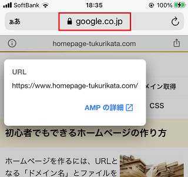

AMPページの作り方
ホームページをAMP（アンプ、Accelerated Mobile Pages）に対応すると、モバイル環境で閲覧した際にサイトの表示が高速化されます。
当ホームページでもAMPには対応していますが、自サイト内の平均読み込み時間で比較するとAMPページは「-76％」となっており、かなり高速で表示されるようになりました。
AMPは当ホームページでご紹介しているような静的なHTMLサイトと相性がよく、シンプルで軽量なHTMLとCSSで作成することにより、ウェブサイトを高速化することができます。
実際に作成する際、外部CSSは使えないなどの「AMP HTML」のルールに沿って作成する必要がありますが、「HTML5」とほぼ同様の仕様となっており、AMP独自のタグはそれほど多くはありません。既存ページをそのまま流用することで簡単に対応できますので、日本語にも対応しているAMPプロジェクトの公式サイトの手順に沿ってAMP化していくことをおすすめします。
Googleの公式ブログでは、「3. サイト全体を AMP 化（#AMPlify）する必要はない」とあるため、サイト内の１部のページのみをAMPに対応するのでも問題はありません。
また、「6. 検索結果のランキングに影響はない」とありますが、当サイトでも検索順位への影響は全くありませんでした。高速で表示されることで軽微なSEO効果ぐらいはあるだろうと期待していましたが、現状では全くの無風状態です。
モバイルファースト・インデックスは、正規化しているページのモバイル版が評価の対象となるため、AMPページについては評価の対象外になるものと思います。
ただし、構造化データのリッチリザルトでは、非AMPページよりもAMPページの方がより魅力的な形で検索結果では表示されるため、クリック率の改善で間接的な影響はあるかもしれません。アクセスの入口となるランディングページについては重点的に対応していくとよいでしょう。
AMPページ作成と「Google AMPキャッシュ」の関係
AMPページを作成しておくと、GoogleにAMPページのキャッシュが作成され、Googleのサーバーからキャッシュページが直接表示されるようになります。
（※参照：概要 | Google AMP キャッシュ | Google Developers）
PCサイトでもキャッシュがありますが、こちらは正規ページのキャッシュになります。
■正規ページのキャッシュ
こちらはその正規ページのキャッシュを表示したものです。
「Google AMPキャッシュ」は、この正規ページのキャッシュではなく、作成した「AMPページのキャッシュ」になりますが、モバイル環境ではこちらが直接表示されることで高速で表示されるようになります。
■AMPページのキャッシュ

そのため、配信されるドメインはGoogleのURLになります。
仮に、自サイトでは重たい格安サーバーを利用していたとしても、Googleが管理しているサーバーから配信されるため、サイトの表示が高速化されるメリットがあります。
一方で、自サーバー内に作成したAMPページに訪問者が直接アクセスされることはほとんどないかもしれません。
AMPはGoogleが中心となって開発されたプロジェクトのため、W3CでのValidatorではエラーが出ますし、上記のように異なるドメインから配信されるため、基本は正規ページを「HTML5 ＋ レスポンシブウェブデザイン」で作成しつつも、高速化したいページのみをAMP化させていくことをおすすめします。
- 正規ページ：PC＋タブレット端末＋スマホ（※HTML5のレスポンシブウェブデザインで作成）
- AMPページ：スマホ（※AMP HTMLで作成）→ Google AMPキャッシュ
また、Google 検索セントラルでは以下の記載があり、AMPページについてもレスポンシブ デザインが推奨されています。
「AMP ページ自体はどの種類のデバイスでも表示できるため、レスポンシブ デザインで AMP ページを作成することをおすすめします。」
パソコンやタブレット端末ではGoogle AMPキャッシュは配信されず、あまり高速化されないとは思いますが、AMPはGoogleだけで利用できる機能ではないため、PCサイトでもタブレット端末でも閲覧できるようにしておいた方がよいかもしれません。
ホームページをAMP化する際の手順
まずはAMPページを入れておく専用の「amp」フォルダを作成し、カテゴリ分けのフォルダなどもPC用と同じように作成しておきます。
次に、作成したフォルダにオリジナルページのHTMLファイルをコピーし、以下の10カ所程度を修正することでAMPに対応することができます。
■AMP化の手順
（１）DTDの<html ⚡ lang="ja">の箇所
（２）<link rel="canonical"でオリジナルページへ正規化
（３）外部CSSは使えないため、<link rel="stylesheet"を削除
（４）<style amp-custom></style>内に外部CSSを置き換え
（５）<style amp-boilerplate>～の定型文の記載
（６）<script async src="https://cdn.ampproject.org/v0.js"></script>の定型文の記載
（７）<img>タグを<amp-img></amp-img>に置き換え
（８）javascriptの使用は制限があるため、アクセス解析や広告などを削除
（９）オリジナルの元のページに<link rel="amphtml"を記載してAMPページを通知
（10）チェックツールでエラーを修正 → AMPテスト
上記の公式サイトではサンプルコードが公開されていますが、順序なども含め、ほぼ、そちらの通りに作成していけば問題ありません。
■<html ⚡ lang="ja">の記載
稲妻マークの絵文字に戸惑うかもしれませんが、そのまま記載します。また、lang="en">の箇所は日本語のlang="ja">に書き変えておくことをおすすめします。
■AMPページの指定とオリジナルへの正規化
AMPページは昔のガラケー携帯サイトの作り方と似ていますが、PC用のオリジナルページには <link rel="amphtml" を記載します。これにより、AMP版のページが存在することをGoogleやTwitterなどに通知することができます。
一方、AMPページの方には <link rel="canonical" を記載して元のオリジナルページへと正規化します。
この <link rel="canonical" についてはPC用のオリジナルのページにも記載し、自分自身に正規化して明示しておくのもよいかと思います。
■CSSの記載
外部CSSは使えないため、<link rel="stylesheet"の記載は削除します。スタイルシートは<style amp-custom></style>内にまとめて記載しますが、正規ページの外部CSSと同じものをそのまま記載しておけば問題ないかと思います。
Google 検索セントラルでは、AMPページはレスポンシブ デザインで作成することが推奨されているため、正規ページのレスポンシブ対応のCSSをそのまま使用するよいと思います。
ただし、AMPはモバイル端末での表示がメインとなるため、PC表示用のスタイルシートについては簡素化した方が高速化されるかもしれません。メディアクエリのブレイクポイントで600pxあたりまでのスマホに対応しておけば問題ないかと思います。
また、できるだけCSSのMinify化で半角スペースや改行などを削除し、ファイルの容量を圧縮しておくことをおすすめしますが、Google AMPキャッシュでの利用については自動で変換してくれるようです。
（参照：HTML のサニタイズ）
■定型文の記載
（５）と（６）の定型文のコードは長いので、このページでは省略してますが、何も考えずに公式サイトの通りにそのまま記載して問題ありません。
上記5カ所の記載がメインになりますが、AMP広告も掲載する際は「amp-ad」のタグが必要となり、さらにアクセス解析も設置する際は「amp-analytics」関連でのタグが必要になります。
■画像タグの修正
難易度が高いのは<img>タグの<amp-img></amp-img>への置き換えですが、AMPページでは終了タグの</amp-img>が必要なため、一括での置換は難しいかもしれません。
また、画像に layout="responsive" を指定することでコンテナ要素の幅と同じになるように自動で拡大、縮小されます。ただし、ロゴなどに設定してしまいますとロゴが巨大化してしまいます。
そのため、はみ出る場合は縮小されつつ、なおかつ通常の場合は原寸大で表示される layout="intrinsic" を指定しておくことをおすすめします。
■内部リンク
AMPページに記載する内部リンクは、オリジナルの正規ページを指定しているケースが多いと感じています。オリジナルページでのキャッシュも確認して、そちらと同じ構造になるようにしておくことをおすすめします。
■その他
大手ニュースサイトなどの場合、構造化データも作成して検索結果のリッチリザルトにも対応した方がよいと思いますが、こちらについては省略できます。
AMP化しないと利用できないリッチリザルト機能があるものの、そもそもAMPによる「モバイルサイト高速化」と構造化データによる「検索結果のリッチリザルト化」は別の機能です。とりあえずはAMP化した上で、余力があれば対応することをおすすめします。
- AMP → モバイル環境での高速表示
- 構造化データ → 検索結果でのリッチリザルト表示
ちなみに、このページでは「HowTo」の構造化データを記載していますが、タイミングによってはモバイル検索でこのようなリッチリザルトが表示されます。
ただし、この構造化データのリッチリザルトはAMP化しなくても利用できるものも多いため、AMPに関わらず、通常のホームページでも対応しておくとよいかもしれません。
また、OGPタグはPC用のオリジナルのものをそのまま使用してよいと思いますが、細かい点は大手メディアなどのAMPページを参考にされるとよいかと思います。
WEBフォントについては、Google AMPキャッシュではフォントもキャッシュする必要があるため、サーバー内に設置しているフォントについてはダウンロード可能な状態に設定しておくことをおすすめします。
もし表示されない場合、.htaccessでMIMEタイプを設定しておくことをおすすめします。
→ @font-faceでWEBフォントの指定方法
AdSense広告の場合、amp-adのスクリプトを<head></head> タグの間に貼り付けたのち、AMP対応のAdSenseタグをコンテンツ中に貼り付ける形になります。
Google Analyticsについては「AMP ページにアナリティクスを追加する」の箇所に書かれていますが、実際に設定する際はこちらのページと見比べながら設定するとよいかと思います。ただし、次世代の Google アナリティクス（GA4）はまだ未対応のようですし、個別のケースで異なるかもしれません。
■AMPチェック
あとはAMPのチェックツールを使い、エラーが出てこないか確認します。
こちらはこのページのAMPページをチェックしたものですが、問題ない場合はこのように表示されます。
プレビュー機能もあり、イナズママークがあれば、AMPページということになります。
チェックツールについては、ChromeデベロッパーツールやAMPの公式ページのThe AMP Validatorなどもありますが、上記のGoogleのAMPテストが使いやすかったです。
AMPページの内部リンクには正規URLを記載する
AMPページでは左上のマークをタップすると正規化のURLを確認できますが、この表示されているAMPページ自体はキャッシュのため、配信されるURLについてはGoogleのURLになります。
例えば、このページのAMPバージョンの場合、Google AMPキャッシュのURLは以下のようになっていましたが、httpsやhttpなどでも違いがあり、おそらく、/amp/s/の「s」はhttpsのsかと思います。
https://www.google.co.jp/amp/s/www.homepage-tukurikata.com/amp/hp/amp.html
URLがGoogleのため、AMPページの内部リンクを相対パスで指定すると、内部リンクもGoogleのURLで表示されるかといえば、PCページ版のキャッシュと同様、きちんと自サイトのURLで表示されていました。
上記の「HTML のサニタイズ」の箇所には以下の記載がありますが、このことを指しているのではないかと思われます。
「ドキュメントがサイト運営者からではなく Google AMP キャッシュから提供される場合でも外部へのリンクを引き続き使用できるよう、外部へのリンクが絶対リンクに設定されます。」
また、AMPページの内部リンクには、「自サイト内のAMPページ」でも「GoogleのAMPページのキャッシュ」でもなく、「正規のオリジナルページ」で内部リンクを記載するのが一般的です。
■AMPページに記載する内部リンク → PC版の正規URLを指定
そのため、「GoogleのAMPページのキャッシュ」から、内部リンクを経由して自サイト内を巡回する際はオリジナルの正規ページへとアクセスされることになり、自サイト内のAMPページに直接アクセスされることはないかもしれません。
- 自サイト内のAMPページ → 実際は直接アクセスされない
- GoogleのAMPページのキャッシュ（GoogleのURL）→ モバイル検索のランディングページ
- 正規のオリジナルページ → PC検索のランディングページ
また、AMPページの内部リンクには自サイトの正規URLが記載されるため、ランディングページ自体は高速化されたとしても、そこからサイト内を巡回する場合は正規のオリジナルページへ移動となります。
そのため、検索結果から飛んだ最初のランディングページについては高速化されたとしても、そこからサイト内を巡回する場合は遅く表示されるはずです。
全てのページを高速化する場合、内部リンクまでを含め、全てのページをGoogle AMPキャッシュのURLで指定する必要がありますが、そもそもAMPはGoogleのプロダクトではありませんし、AMPページを利用できるサービスはGoogleのみではないため、一般的なサイトではそういった形での運用はされていないようです。